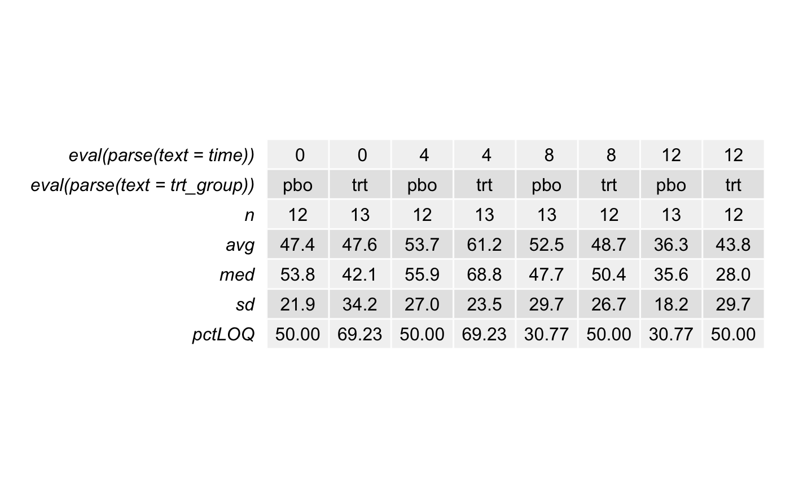

t_summarytable.RdOutput render by teal.goshawk module t_summarytable returns
descriptive summary statistics table
t_summarytable(data, biomarker, trt_group, time, loq, ...)
| data | data frame name |
|---|---|
| biomarker | biomarker PARAM value |
| trt_group | treatment group variable name e.g. arm |
| time | visit variable name e.g. visit |
| loq | loq variable name e.g. loq_flag |
returned object name object
provide additional information as needed. perhaps link to specification file
# test data biomarker <- runif(100,3,100) biomarker.bl <- NULL for (i in 0:24) { biomarker.bl <- c ( biomarker.bl, rep(biomarker[i * 4 + 1], 4)) } arm <- c(rep('trt',50),rep('pbo',50)) visit <- c(rep(c(0,4,8,12),25)) loq_flag <- c(rep(c(rep('YES',10),rep('NO',10)),5)) example <- data.frame(biomarker = biomarker, biomarker.bl = biomarker.bl, arm = arm, loq_flag = loq_flag, visit = visit) colnames(example) <- c('IGG', 'IGG.bl', 'arm','loq_flag','visit') unit <- 'g/L' timepoint <- 'screening' color_manual <- c('pbo' = "#1F78B4", 'trt' = "#33A02C") shape_manual <- c('NO' = 1, 'YES' = 2, 'NA' = 0) # call function t_summarytable(data = example, biomarker = 'IGG', trt_group = 'arm', time = 'visit', loq = 'loq_flag')#> TableGrob (7 x 9) "rowhead-fg": 126 grobs #> z cells name grob #> 1 1 (1-1,1-1) rowhead-fg text[GRID.text.113] #> 2 2 (2-2,1-1) rowhead-fg text[GRID.text.114] #> 3 3 (3-3,1-1) rowhead-fg text[GRID.text.115] #> 4 4 (4-4,1-1) rowhead-fg text[GRID.text.116] #> 5 5 (5-5,1-1) rowhead-fg text[GRID.text.117] #> 6 6 (6-6,1-1) rowhead-fg text[GRID.text.118] #> 7 7 (7-7,1-1) rowhead-fg text[GRID.text.119] #> 8 0 (1-1,1-1) rowhead-bg rect[GRID.rect.120] #> 9 0 (2-2,1-1) rowhead-bg rect[GRID.rect.121] #> 10 0 (3-3,1-1) rowhead-bg rect[GRID.rect.122] #> 11 0 (4-4,1-1) rowhead-bg rect[GRID.rect.123] #> 12 0 (5-5,1-1) rowhead-bg rect[GRID.rect.124] #> 13 0 (6-6,1-1) rowhead-bg rect[GRID.rect.125] #> 14 0 (7-7,1-1) rowhead-bg rect[GRID.rect.126] #> 15 1 (1-1,2-2) core-fg text[GRID.text.1] #> 16 2 (2-2,2-2) core-fg text[GRID.text.2] #> 17 3 (3-3,2-2) core-fg text[GRID.text.3] #> 18 4 (4-4,2-2) core-fg text[GRID.text.4] #> 19 5 (5-5,2-2) core-fg text[GRID.text.5] #> 20 6 (6-6,2-2) core-fg text[GRID.text.6] #> 21 7 (7-7,2-2) core-fg text[GRID.text.7] #> 22 8 (1-1,3-3) core-fg text[GRID.text.8] #> 23 9 (2-2,3-3) core-fg text[GRID.text.9] #> 24 10 (3-3,3-3) core-fg text[GRID.text.10] #> 25 11 (4-4,3-3) core-fg text[GRID.text.11] #> 26 12 (5-5,3-3) core-fg text[GRID.text.12] #> 27 13 (6-6,3-3) core-fg text[GRID.text.13] #> 28 14 (7-7,3-3) core-fg text[GRID.text.14] #> 29 15 (1-1,4-4) core-fg text[GRID.text.15] #> 30 16 (2-2,4-4) core-fg text[GRID.text.16] #> 31 17 (3-3,4-4) core-fg text[GRID.text.17] #> 32 18 (4-4,4-4) core-fg text[GRID.text.18] #> 33 19 (5-5,4-4) core-fg text[GRID.text.19] #> 34 20 (6-6,4-4) core-fg text[GRID.text.20] #> 35 21 (7-7,4-4) core-fg text[GRID.text.21] #> 36 22 (1-1,5-5) core-fg text[GRID.text.22] #> 37 23 (2-2,5-5) core-fg text[GRID.text.23] #> 38 24 (3-3,5-5) core-fg text[GRID.text.24] #> 39 25 (4-4,5-5) core-fg text[GRID.text.25] #> 40 26 (5-5,5-5) core-fg text[GRID.text.26] #> 41 27 (6-6,5-5) core-fg text[GRID.text.27] #> 42 28 (7-7,5-5) core-fg text[GRID.text.28] #> 43 29 (1-1,6-6) core-fg text[GRID.text.29] #> 44 30 (2-2,6-6) core-fg text[GRID.text.30] #> 45 31 (3-3,6-6) core-fg text[GRID.text.31] #> 46 32 (4-4,6-6) core-fg text[GRID.text.32] #> 47 33 (5-5,6-6) core-fg text[GRID.text.33] #> 48 34 (6-6,6-6) core-fg text[GRID.text.34] #> 49 35 (7-7,6-6) core-fg text[GRID.text.35] #> 50 36 (1-1,7-7) core-fg text[GRID.text.36] #> 51 37 (2-2,7-7) core-fg text[GRID.text.37] #> 52 38 (3-3,7-7) core-fg text[GRID.text.38] #> 53 39 (4-4,7-7) core-fg text[GRID.text.39] #> 54 40 (5-5,7-7) core-fg text[GRID.text.40] #> 55 41 (6-6,7-7) core-fg text[GRID.text.41] #> 56 42 (7-7,7-7) core-fg text[GRID.text.42] #> 57 43 (1-1,8-8) core-fg text[GRID.text.43] #> 58 44 (2-2,8-8) core-fg text[GRID.text.44] #> 59 45 (3-3,8-8) core-fg text[GRID.text.45] #> 60 46 (4-4,8-8) core-fg text[GRID.text.46] #> 61 47 (5-5,8-8) core-fg text[GRID.text.47] #> 62 48 (6-6,8-8) core-fg text[GRID.text.48] #> 63 49 (7-7,8-8) core-fg text[GRID.text.49] #> 64 50 (1-1,9-9) core-fg text[GRID.text.50] #> 65 51 (2-2,9-9) core-fg text[GRID.text.51] #> 66 52 (3-3,9-9) core-fg text[GRID.text.52] #> 67 53 (4-4,9-9) core-fg text[GRID.text.53] #> 68 54 (5-5,9-9) core-fg text[GRID.text.54] #> 69 55 (6-6,9-9) core-fg text[GRID.text.55] #> 70 56 (7-7,9-9) core-fg text[GRID.text.56] #> 71 0 (1-1,2-2) core-bg rect[GRID.rect.57] #> 72 0 (2-2,2-2) core-bg rect[GRID.rect.58] #> 73 0 (3-3,2-2) core-bg rect[GRID.rect.59] #> 74 0 (4-4,2-2) core-bg rect[GRID.rect.60] #> 75 0 (5-5,2-2) core-bg rect[GRID.rect.61] #> 76 0 (6-6,2-2) core-bg rect[GRID.rect.62] #> 77 0 (7-7,2-2) core-bg rect[GRID.rect.63] #> 78 0 (1-1,3-3) core-bg rect[GRID.rect.64] #> 79 0 (2-2,3-3) core-bg rect[GRID.rect.65] #> 80 0 (3-3,3-3) core-bg rect[GRID.rect.66] #> 81 0 (4-4,3-3) core-bg rect[GRID.rect.67] #> 82 0 (5-5,3-3) core-bg rect[GRID.rect.68] #> 83 0 (6-6,3-3) core-bg rect[GRID.rect.69] #> 84 0 (7-7,3-3) core-bg rect[GRID.rect.70] #> 85 0 (1-1,4-4) core-bg rect[GRID.rect.71] #> 86 0 (2-2,4-4) core-bg rect[GRID.rect.72] #> 87 0 (3-3,4-4) core-bg rect[GRID.rect.73] #> 88 0 (4-4,4-4) core-bg rect[GRID.rect.74] #> 89 0 (5-5,4-4) core-bg rect[GRID.rect.75] #> 90 0 (6-6,4-4) core-bg rect[GRID.rect.76] #> 91 0 (7-7,4-4) core-bg rect[GRID.rect.77] #> 92 0 (1-1,5-5) core-bg rect[GRID.rect.78] #> 93 0 (2-2,5-5) core-bg rect[GRID.rect.79] #> 94 0 (3-3,5-5) core-bg rect[GRID.rect.80] #> 95 0 (4-4,5-5) core-bg rect[GRID.rect.81] #> 96 0 (5-5,5-5) core-bg rect[GRID.rect.82] #> 97 0 (6-6,5-5) core-bg rect[GRID.rect.83] #> 98 0 (7-7,5-5) core-bg rect[GRID.rect.84] #> 99 0 (1-1,6-6) core-bg rect[GRID.rect.85] #> 100 0 (2-2,6-6) core-bg rect[GRID.rect.86] #> 101 0 (3-3,6-6) core-bg rect[GRID.rect.87] #> 102 0 (4-4,6-6) core-bg rect[GRID.rect.88] #> 103 0 (5-5,6-6) core-bg rect[GRID.rect.89] #> 104 0 (6-6,6-6) core-bg rect[GRID.rect.90] #> 105 0 (7-7,6-6) core-bg rect[GRID.rect.91] #> 106 0 (1-1,7-7) core-bg rect[GRID.rect.92] #> 107 0 (2-2,7-7) core-bg rect[GRID.rect.93] #> 108 0 (3-3,7-7) core-bg rect[GRID.rect.94] #> 109 0 (4-4,7-7) core-bg rect[GRID.rect.95] #> 110 0 (5-5,7-7) core-bg rect[GRID.rect.96] #> 111 0 (6-6,7-7) core-bg rect[GRID.rect.97] #> 112 0 (7-7,7-7) core-bg rect[GRID.rect.98] #> 113 0 (1-1,8-8) core-bg rect[GRID.rect.99] #> 114 0 (2-2,8-8) core-bg rect[GRID.rect.100] #> 115 0 (3-3,8-8) core-bg rect[GRID.rect.101] #> 116 0 (4-4,8-8) core-bg rect[GRID.rect.102] #> 117 0 (5-5,8-8) core-bg rect[GRID.rect.103] #> 118 0 (6-6,8-8) core-bg rect[GRID.rect.104] #> 119 0 (7-7,8-8) core-bg rect[GRID.rect.105] #> 120 0 (1-1,9-9) core-bg rect[GRID.rect.106] #> 121 0 (2-2,9-9) core-bg rect[GRID.rect.107] #> 122 0 (3-3,9-9) core-bg rect[GRID.rect.108] #> 123 0 (4-4,9-9) core-bg rect[GRID.rect.109] #> 124 0 (5-5,9-9) core-bg rect[GRID.rect.110] #> 125 0 (6-6,9-9) core-bg rect[GRID.rect.111] #> 126 0 (7-7,9-9) core-bg rect[GRID.rect.112]